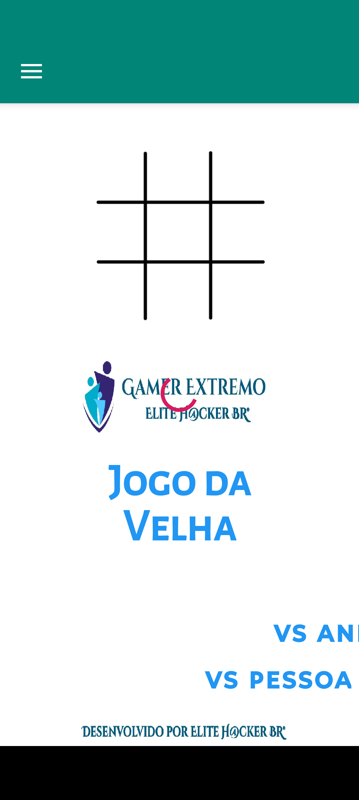
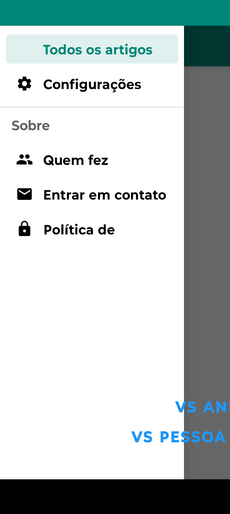
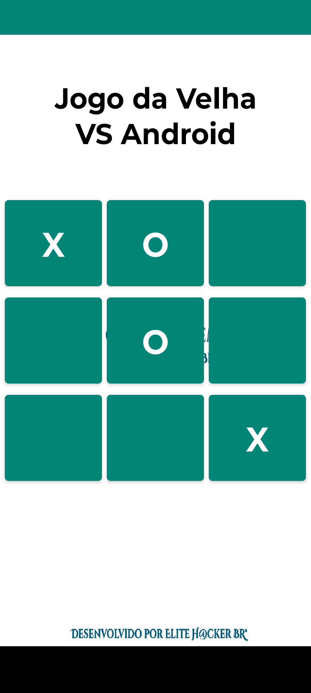

❌⭕ Jogo da Velha, Nostalgia
Relembre os jogos clássicos com este nostálgico joguinho. "X" é o seu jogador e "Círculo" é o seu adversário. Jogue contra o Android (VS Android) ou sozinho no modo VS Pessoa. Ganha quem completar 3 letras iguais em sequência, retas na mesma coluna ou em diagonal.
✨ Funcionalidades
- Modo VS Android — jogue contra a inteligência artificial
- Modo VS Pessoa — jogue com um amigo no mesmo dispositivo
- Visual retrô nostálgico
- Partidas rápidas e viciantes
- Vídeos educativos via YouTube
- Funciona 100% offline (exceto os vídeos do YouTube)
- Gratuito, sem coleta de dados pessoais
📸 Screenshots



❓ Perguntas Frequentes
O jogo é gratuito?
Sim, o Jogo da Velha, Nostalgia é totalmente gratuito, com anúncios discretos que ajudam a manter o desenvolvimento.
Preciso de internet para jogar?
Não para as partidas — elas funcionam 100% offline. Apenas os vídeos educativos do YouTube exigem conexão com a internet.
Qual a diferença entre os modos VS Android e VS Pessoa?
No modo VS Android, você joga contra a inteligência artificial do celular. No modo VS Pessoa, duas pessoas jogam na mesma tela, alternando as jogadas.
Como funciona a vitória?
Ganha quem completar 3 letras iguais em sequência — em linha reta (horizontal), na mesma coluna (vertical) ou em diagonal.
Para que servem os vídeos do YouTube no app?
Os vídeos são conteúdos educativos e nostálgicos sobre o clássico jogo da velha, curiosidades e dicas. Eles são carregados via YouTube e exigem conexão com a internet.
Meus dados são coletados?
Apenas dados anônimos de uso (se Firebase estiver ativo) e o identificador de publicidade (AdMob), se aplicável. Nenhum dado pessoal é coletado. Veja a Política de Privacidade.
Como reporto um erro ou sugiro uma melhoria?
Envie um e-mail para gamerextremobr5@gmail.com ou abra uma issue no GitHub.
📜 Histórico de Versões
Versão 1.1
05 de Novembro de 2026 — Atualização
- Melhorias de desempenho e estabilidade
- Ajustes visuais no tabuleiro
Versão 1.0
Lançamento inicial
- Modo VS Android (contra inteligência artificial)
- Modo VS Pessoa (dois jogadores no mesmo dispositivo)
- Visual retrô nostálgico
- Vídeos educativos via YouTube
- Funcionamento 100% offline (exceto vídeos)
🔒 Privacidade
O Jogo da Velha, Nostalgia não coleta dados pessoais. Apenas dados anônimos de uso, identificador de publicidade (se aplicável) e o endereço IP processado pelo Google ao carregar vídeos do YouTube. Saiba mais na política abaixo.